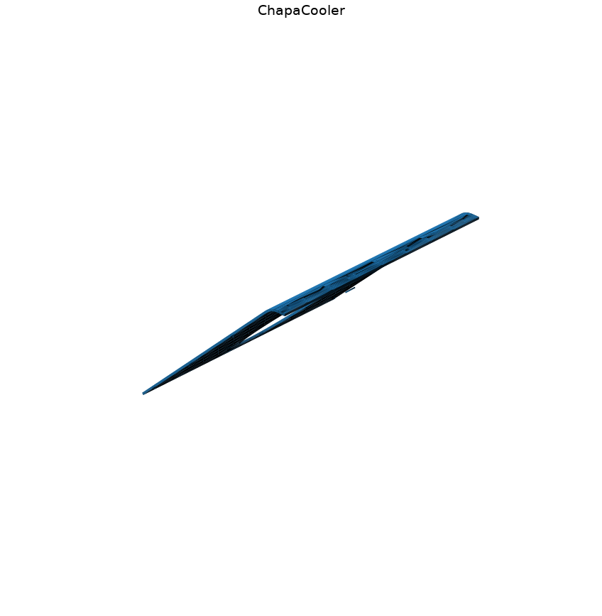

LibreIncu-150 — Manual de montaje e inventario¶
Guía práctica para comprar, preparar, montar, cablear y poner en marcha el rediseño. No es un plano de taller: la geometría fina (agujeros, plegados, ángulos, tolerancias) se resuelve abriendo el CAD maestro → se marca
VER CAD.
1. Alcance¶
Este documento sirve como: - Inventario mecánico de la incubadora. - Guía de montaje paso a paso. - Base de compra, corte, preparación y verificación. - Referencia eléctrica y de puesta en marcha.
Las dimensiones mecánicas provienen de la envolvente de cada pieza en el CAD. Sirven para
comprar y cortar, no para ubicar agujeros, líneas de plegado ni ángulos. Donde haga falta
geometría fina, el texto indica VER CAD.
2. Convenciones¶
OK FABRICAR— hay datos suficientes aquí para comprar, cortar o preparar.OK MONTAR— pieza/subconjunto listo para ensamblar.VER CAD— requiere la geometría fina del modelo maestro antes de fabricar.
Confianza de las medidas del inventario: estandar (pieza comercial que coincide con catálogo),
envolvente (apta para compra/corte), instancia (bloque sin explotar → abrir CAD).
4. El rediseño de un vistazo¶
- Envolvente de los sólidos del modelo: ≈ 605 × 1264 × 1189 mm (ancho × prof × alto). Nota: es la envolvente de los sólidos explícitos; confirmar el gálibo final en el CAD (el casco de puntos del STEP es mayor por puntos de control B-spline e instancias).
- Estructura: bastidor de tubo 25×25 y 30×30 mm (
Perfil25-25). - Cerramiento: chapa metálica plegada (
Chapa-*, 1/8″ ≈ 3 mm), tableros MDF 18 mm, frente de policarbonato (FRENTE-PC, ~5×486×1189 mm). - Bandejas: fijas + móviles con
AcopleBandejaEje,HombroBandej, guíaGUIA-CREMA/Cremayera. - Volteo: polea dentada + cremallera, eje sobre rodamientos
624/626/HLM8UU, buje PTFE, acoples PA6, motorreductor 12 V; reemplaza al sistema impreso anterior. - Puertas/tapas:
U 2219 - Door,VentilacionDoor,Tapas, bisagrasBisagraP.
5. BOM consolidada¶
5.1 Mecánica (extraída del CAD)¶
Inventario completo en la sección Inventario CAD. Resumen accionable:
Estructura — lista de corte de perfiles (Perfil25-25, OK FABRICAR):
| Sección | Largos (mm) | Cant |
|---|---|---|
| 30×30 | 1086 | 4 |
| 30×30 | 577 | 4 |
| 25×25 | 934 / 654 (×4) / 609 / 448 / 406 / 191 | 1/4/1/1/1/1 |
| 40×40 | 461 | 1 |
(30×122×143 ×2 = piezas de unión/encuentro → VER CAD.)
Cerramientos (OK FABRICAR el corte; VER CAD plegados): chapa 1/8″ (8 piezas, esp. ~3 mm),
Chapa-Paredon, Chapa-Caja, Chapa-SoporteInferior, ChapaCooler; MDF 18 mm (paneles hasta
784×1169 mm); frente policarbonato ~5×486×1189 mm.
Volteo — comprar: Rodamiento626 ×11, Rodamiento624 ×3, RodamientoHLM8UU ×1, cremallera y
polea dentada. Mecanizar/imprimir (VER CAD): PoleaDentada (33×50×50), AcoplesPA6,
Buje-PTFE (varilla ~311 mm), ACOPLE 8 a 5.
Fijación — comprar: tornillos M3 (×27), M4 (×18), M5 (×24) y tuercas M3/M4/M5/M6/M8 (ver largos en el inventario).
Las capas
Pelos,Letritas,Auxiliar*,Reguetonesson referencia visual, no se fabrican.
5.2 Actuadores, sensores y alimentación¶
- Fuente switching 12 V 5 A ventilada · step-down LM2596 (ajustar a 5 V).
- Resistencia calefactora 200 W (tipo panchera) · ventilador turbina 220 VAC 120 mm.
- Bomba de agua 12 VCC 4.3 LPM 35 PSI · motorreductor 12 V ~17 rpm (volteo).
- Sensor BME280 (temp/humedad/presión, I²C) · 2× reed switch (finales de carrera).
- Protecciones: disyuntor bipolar 2×25 A, termomagnéticas Q1–Q4, llaves on/off, prensacables.
5.3 Placa de control Olivia v0.2¶
- MCU: ESP32-WROOM-32D.
- Potencia AC: 2× TRIAC BTA16-800B, opto-TRIAC MOC3041SM, opto TLP181 (cruce por cero).
- Alimentación on-board: módulo HW-613 (DC-DC).
- Conectores: Molex SL, Phoenix GMSTB, headers de programación.
- Fabricar la placa con los Gerbers y la especificación provistos.
6. Preparación de piezas¶
| Grupo | Acción | Estado |
|---|---|---|
| Comerciales (rodamientos, tornillería, bomba, cooler, motorreductor) | Comprar según BOM | OK FABRICAR |
| Perfiles 25×25 / 30×30 / 40×40 | Cortar a los largos de la lista | OK FABRICAR |
| Chapas metálicas | Cortar; plegar abriendo CAD | VER CAD |
| Tableros MDF / frente PC | Cortar tablero | VER CAD |
| Bandejas, guías, acoples bandeja-eje | Mecanizar/imprimir | VER CAD |
| Volteo: polea dentada, acoples PA6, buje PTFE | Mecanizar/imprimir | VER CAD |
7. Montaje mecánico (orden recomendado)¶
Cada paso: Piezas · Acción · Control dimensional · Riesgo · Resultado.
- Bastidor
Perfil25-25— Piezas: tubos 25×25 y 30×30 cortados. Acción: soldar/atornillar el marco escuadrado. Control: diagonales iguales, escuadra. Riesgo: descuadre. Resultado: estructura rígida ≈ 605 × 1264 × 1189 mm. - Gabinete y chapas — fijar
Chapa-Caja,Chapa-Paredon,Chapa-SoporteInferior, MDF. Control: sin luz/fugas de aire. Riesgo: fugas térmicas. Resultado: recinto cerrado.VER CADpara posiciones de agujeros y plegados. - Puertas, tapas y bisagras — montar
U 2219 - Door,Tapas,BisagraP,VentilacionDoor, frente PC. Control: cierre parejo, burlete (Pelos= cepillo). Resultado: apertura suave y sellada. - Bandejas fijas y móviles — colocar
BandejasFijas,HombroBandej,Bandeja::huevera. Resultado: soporte de huevos nivelado. - Guías y cremallera — fijar
GUIA-CREMA/Cremayera. Control: deslizamiento sin roce. - Sistema de volteo — ver §8.
- Alineación final — repaso de tornillería, holguras y nivelación.
8. Sistema de volteo (detalle)¶
Componentes: motorreductor 12 V ~17 rpm · eje · rodamientos 624 (×3) / 626 (×11) / HLM8UU (×1)
· buje PTFE (~311 mm) · polea dentada (33×50×50) + cremallera · acoples PA6 · AcopleBandejaEje
(×75) · SoporT-AntiVib · reeds superior/inferior (finales de carrera).
Montaje: montar rodamientos en sus alojamientos → pasar el eje y el buje PTFE → fijar la polea
dentada y engranarla con la cremallera → acoplar las bandejas al eje
(AcopleBandejaEje) → ubicar reeds de fin de carrera arriba/abajo.
VER CAD para: posición exacta de eje y soportes, alojamiento de rodamientos, engrane y posición de la cremallera, y posición de los reeds. El control de giro lo hace el puente H (ver §9–§10).
9. Instalación eléctrica¶
- Gabinete eléctrico IP65 con riel DIN.
- Entrada 220 VAC → disyuntor diferencial bipolar 2×25 A → termomagnéticas Q1–Q4 (electrónica / calefactor / luz+ventilador).
- 12 V: fuente switching 12 V 5 A. 5 V: step-down LM2596 (ajustar) para el ESP32.
- Cargas AC: resistencia 200 W vía TRIAC, ventilador y luz.
- Cargas DC: bomba (relé/MOSFET), motorreductor por puente H L298.
- Señales: BME280 (I²C), 2× reed (finales de carrera) a la placa Olivia.
- Respetar separación AC/DC, puesta a tierra y prensacables. Usar el código de colores y el esquemático del proyecto.
10. Mapa de señales (ESP32)¶
| GPIO | Señal | Destino |
|---|---|---|
| 2 | VOLTEO_UP / IN_A_N | L298 IN1 (subir) |
| 15 | VOLTEO_DOWN / IN_A_P | L298 IN2 (bajar) |
| 13 | VOLTEO_EN / EN_A | L298 ENA (habilita motor) |
| 14 | RESISTOR | TRIAC → resistencia 200 W |
| 17 | HUMID | relé → bomba |
| 35 | REED_UP | reed superior (pull-up) |
| 34 | REED_DOWN | reed inferior (pull-up) |
| 32 / 33 | SDA / SCL | BME280 (I²C) |
11. Puesta en marcha (checklist)¶
Se asume la placa Olivia ya flasheada. El firmware se documenta aparte.
- [ ] Inspección mecánica sin tensión (tornillería, holguras, giro libre del eje).
- [ ] Continuidad y puesta a tierra; verificar separación AC/DC.
- [ ] Primer encendido sin cargas; medir 12 V y ajustar LM2596 a 5 V.
- [ ] Lectura del BME280 (temp/humedad coherentes).
- [ ] Activar resistencia, ventilador/luz y bomba por separado.
- [ ] Volteo manual: comprobar sentido y detención por reeds arriba/abajo.
- [ ] Conexión a la red WiFi
incu-#(app / Grafana). - [ ] Ciclo de prueba sin huevos: estabilización de temperatura/humedad y un volteo completo.
12. Troubleshooting¶
| Síntoma | Revisar |
|---|---|
| No enciende | Entrada 220 V, disyuntor, termomagnéticas, fusible de la placa |
| No mide temp/humedad | I²C (GPIO32/33), alimentación y dirección del BME280 |
| No calienta | Salida TRIAC (GPIO14), resistencia 200 W, cableado de potencia |
| No humidifica | Salida bomba (GPIO17), nivel de agua, cebado |
| No gira | Motorreductor, puente H L298 (GPIO13/2/15), atasco mecánico |
| Gira al revés | Invertir cables del motor (o lógica IN_A_N/IN_A_P) |
| No detecta reed | Continuidad del reed con imán, pull-up en GPIO34/35 |
| Se traba el volteo | Engrane polea–cremallera, alineación de bujes PTFE, roce de bandejas (VER CAD) |
13. Galería de piezas fabricadas¶
Vista isométrica del conjunto de piezas fabricadas:

Estructura¶

Cerramiento¶
 |
 |
 |
 |
 |
 |
 |
 |
Puertas y tapas¶
 |
 |
 |
 |
Bandejas¶
 |
 |
 |
Volteo¶
 |
 |
 |
 |
 |
 |
 |
 |
 |
 |
Otros¶
 |
 |
 |
 |